K4A6 5/6-SPD M/T
K4A6 5/6 Spd M/T, Clutch Assembly:
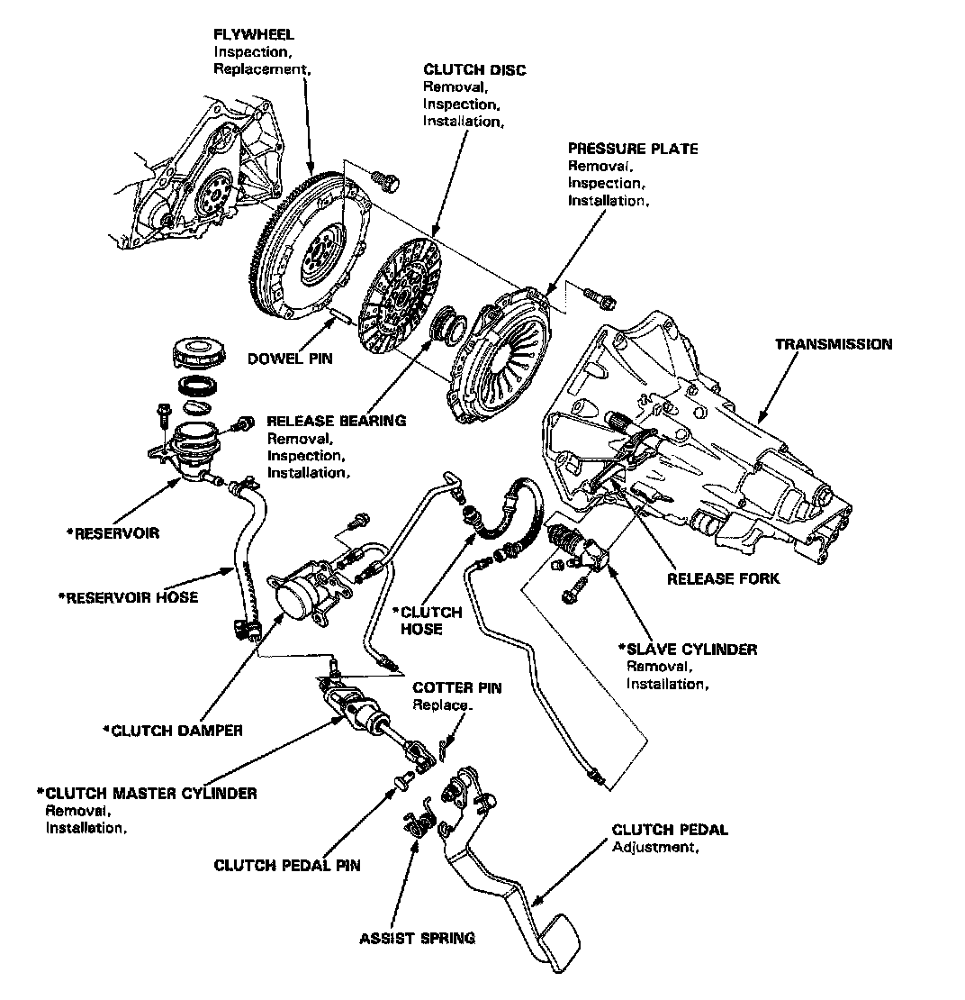
K4A6 5/6 Spd M/T, Clutch Pedal Assembly:
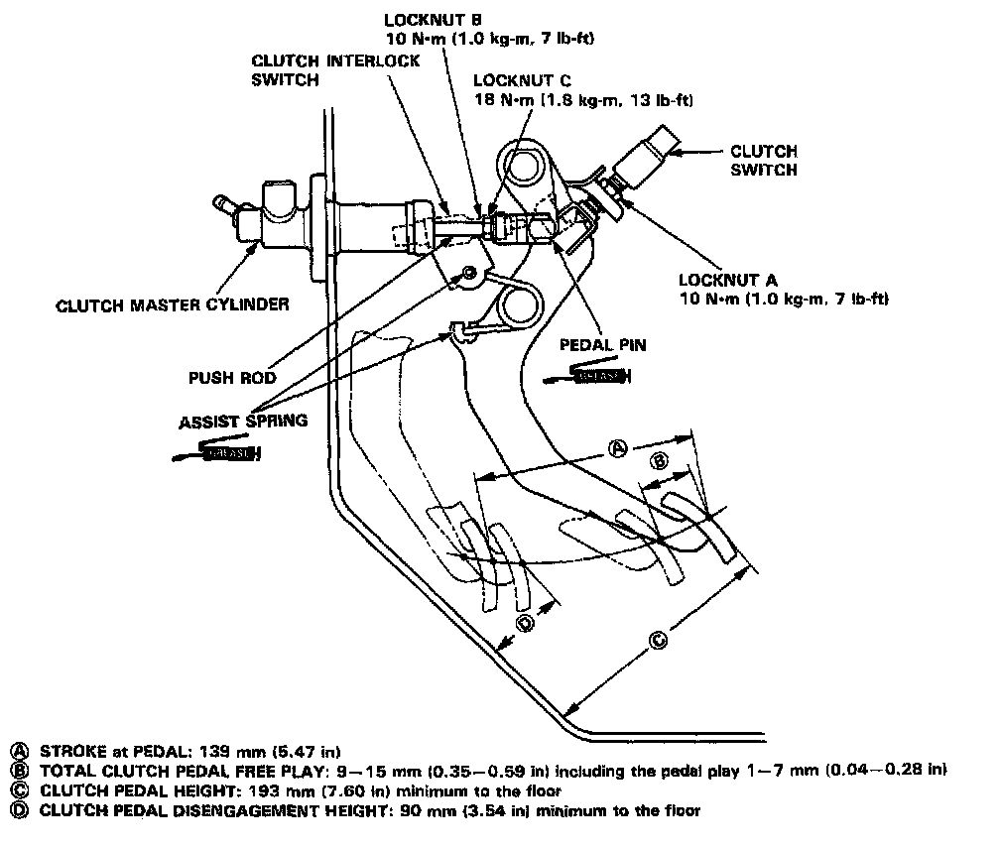
K4A6 5/6 Spd M/T, Clutch Master Cylinder:
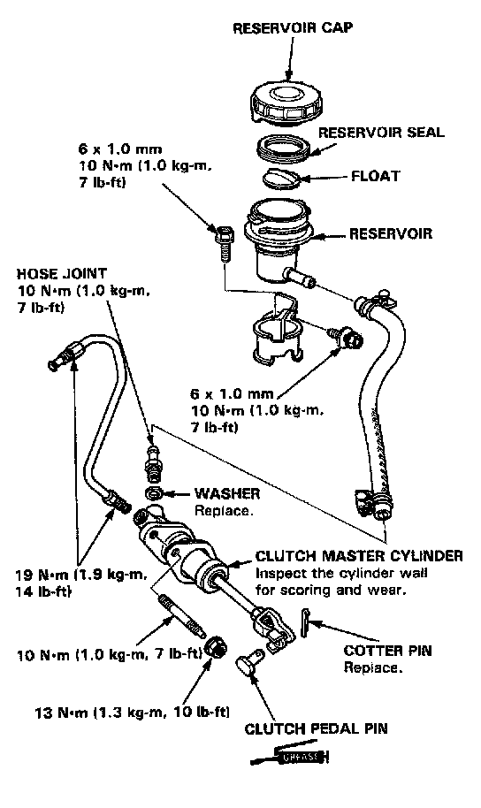
K4A6 5/6 Spd M/T, Slave Cylinder:
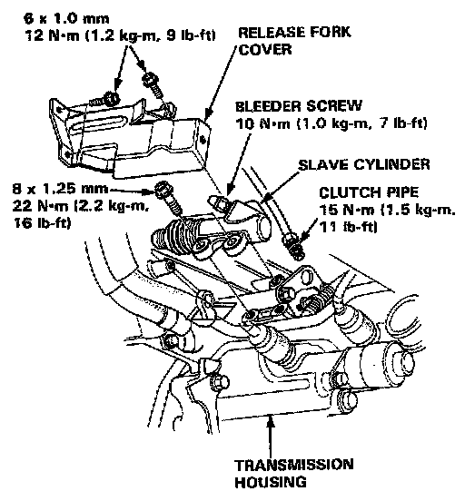
K4A6 5/6 Spd M/T, Flywheel Torque & Sequence:
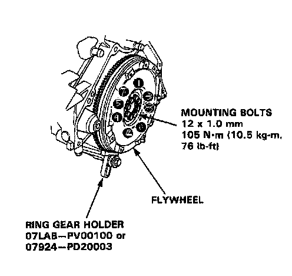
K4A6 5/6 Spd M/T, Pressure Plate Torque & Sequence:
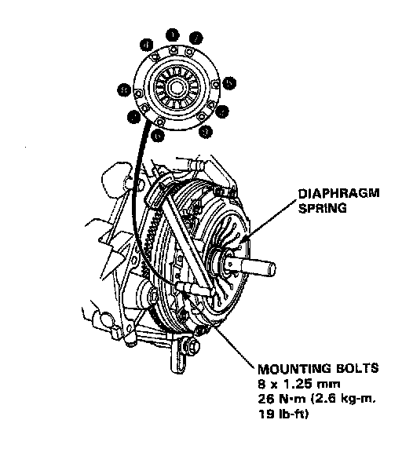
K4A6 5/6 Spd M/T, Transmission Assembly (1 Of 2):
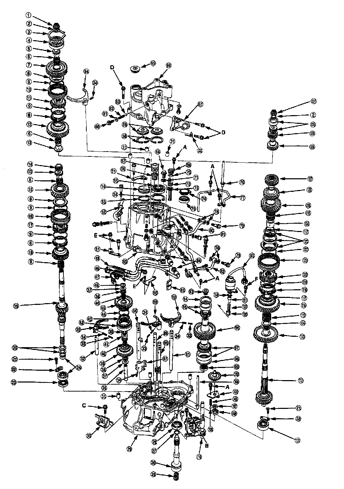
K4A6 5/6 Spd M/T, Transmission Assembly Legend (2 Of 2):
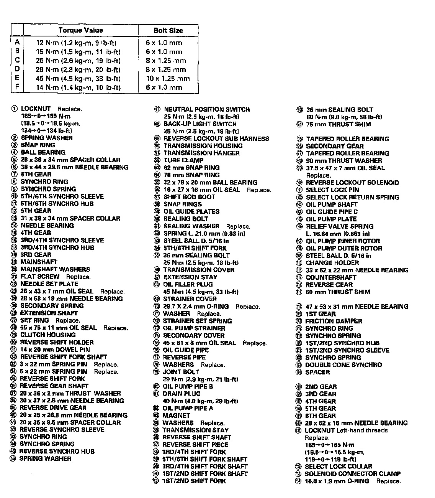
K4A6 5/6 Spd M/T, Transmission Housing:
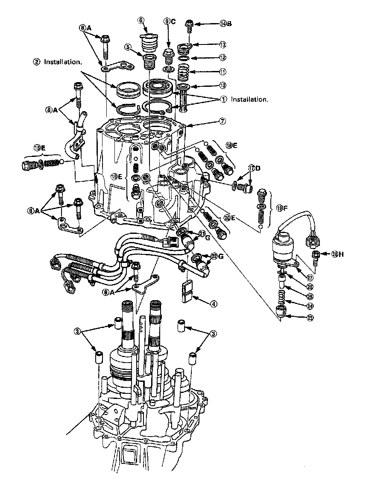
K4A6 5/6 Spd M/T, Transmission Housing Legend:
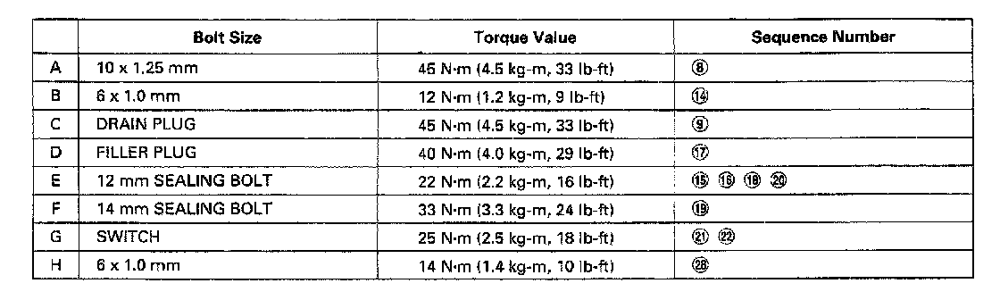
K4A6 5/6 Spd M/T, Oil Pump Strainer:
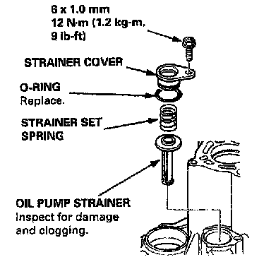
K46a 5/6 Spd M/T, 5th/6th Gear Installation:
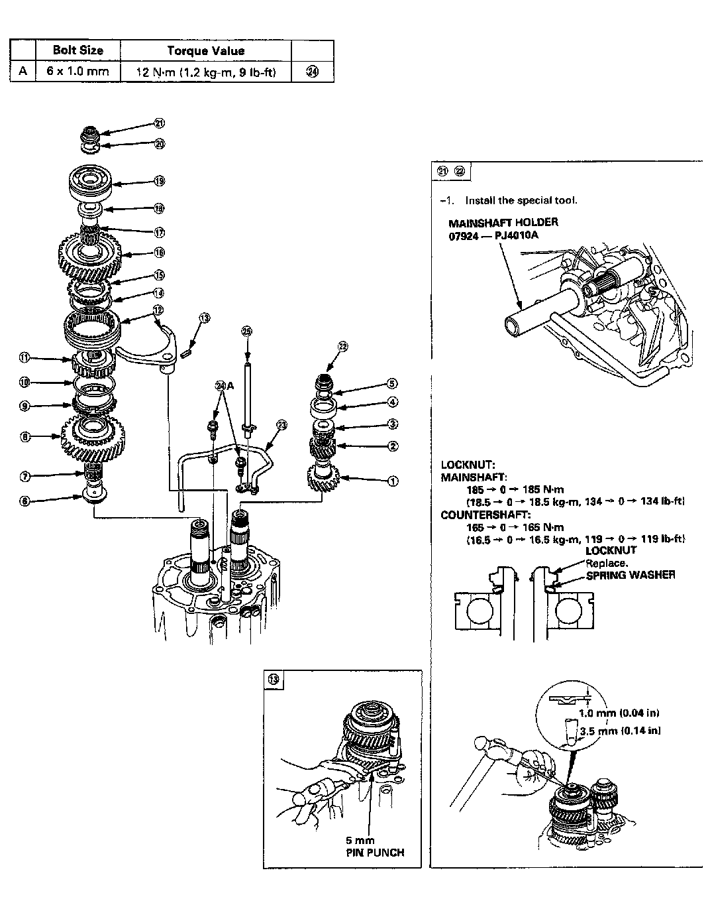
K4A6 5/6 Spd M/T, Transmission Cover:
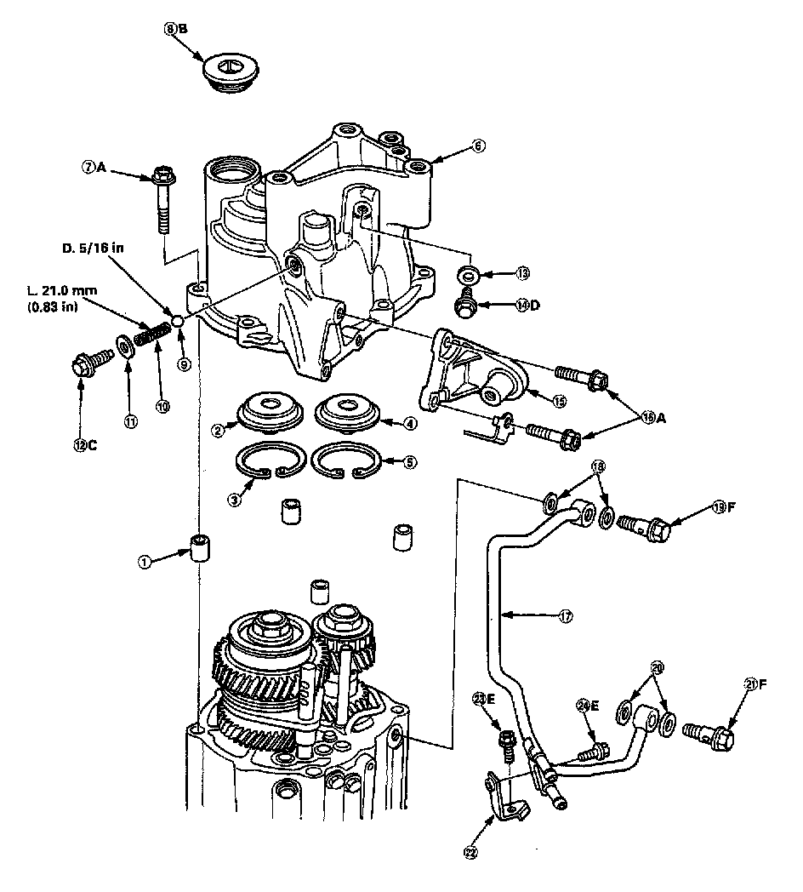
K4A6 5/6 Spd M/T, Transmission Cover Legend:
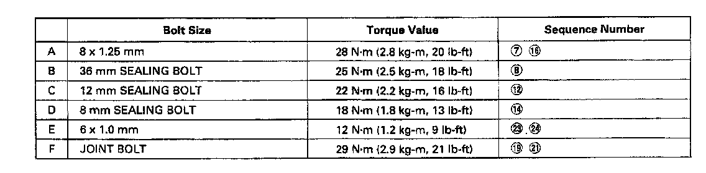
K4A6 5/6 Spd M/T, Transmission Mounting:
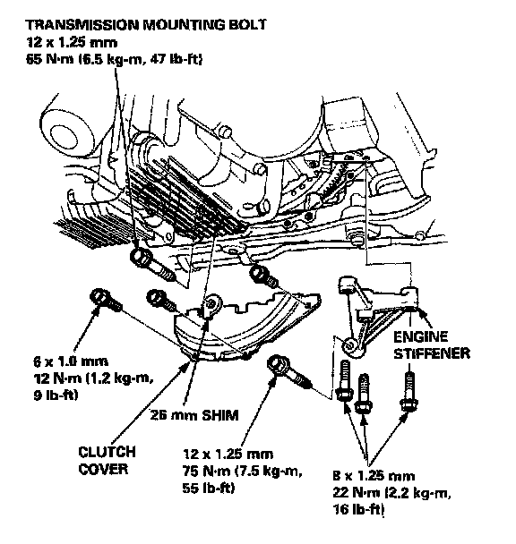
K4A6 5/6 Spd M/T, Transmission Mounts:
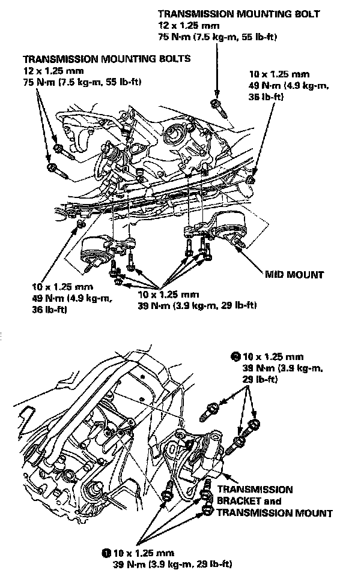
K4A6 5/6 Spd M/T, Gearshift Mechanism:
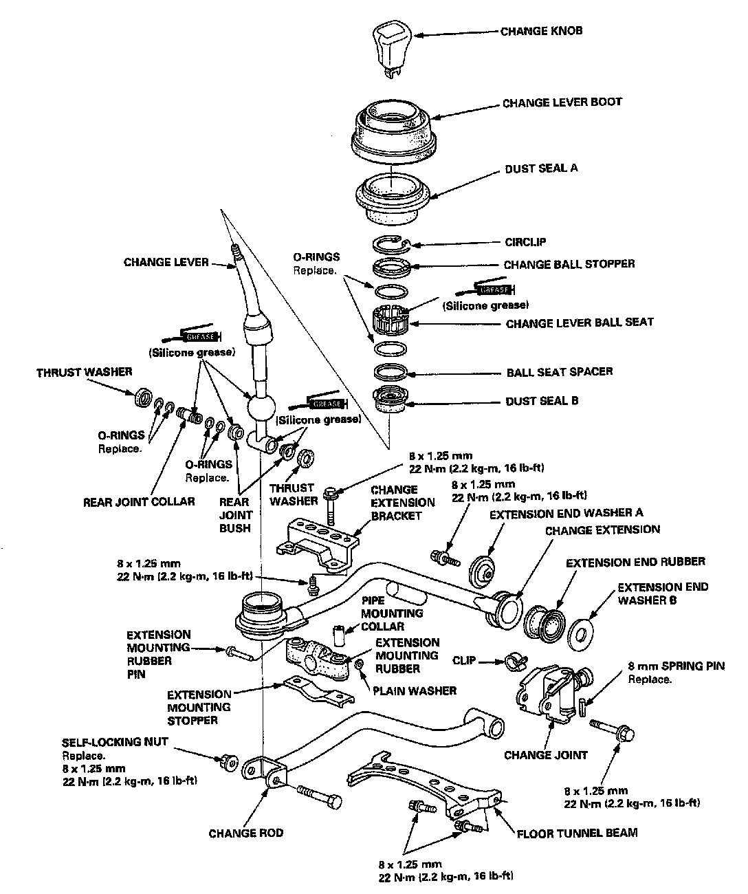